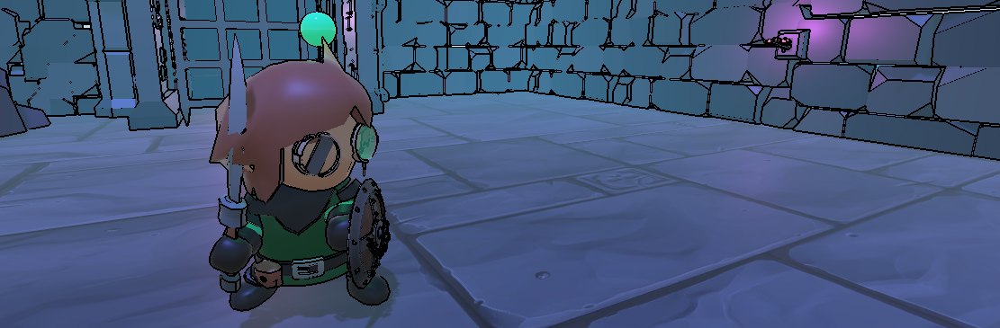
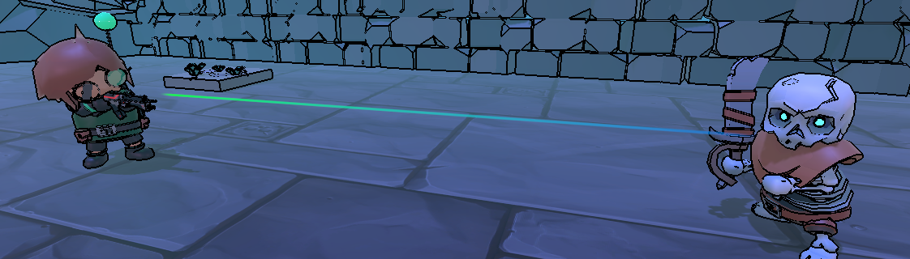
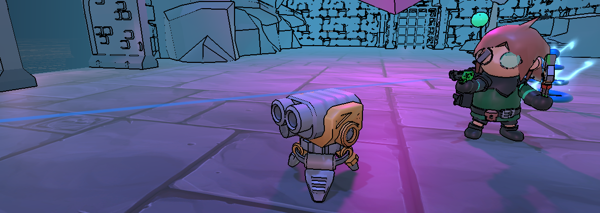

Nexulum is a 3D top down installment in the action/adventure video game genre. Nexulum serves to empower the player by allowing a selection of multiple classes, each that come equipped with their own weapons and abilities.
During the player's time in the world of Nexulum, they will be exploring the lost ruins of a fabled age that has been forgotten to time in search of a relic dubbed, "The Nexulum".
Utilize magical runes and materials found throughout these ruins to further craft and augment your current abilities to become more capable and make it to the peak of the ruins to fufill your mission objective.
The Knight class acts as a close ranged combative class, allowing opportunity to get in close to enemies and deal high amounts of damage. Due to the Knight's riskier nature, they come equipped with defensive capabilities and buffing opportunities to dole out as much damage as they can.
The Gunner class acts as a long ranged projectile class, allowing opportunity to keep distance from enemies and deal high pressure. Due to the Gunner's safe nature, they must keep a continuous stream of fire on enemies to deal high amounts of damage, through both their main weapon and abilities such as rockets and grenades.
The Engineer class acts as a mid ranged utility class, allowing opportunity to either get in close, or keep a distance from enemies. The engineer is able to create objects within the world such as turrets and coils that will deal damage to enemies through their interactions. The engineer themselves however come equipped with both a handgun and melee tool for a mix of playstyle.
